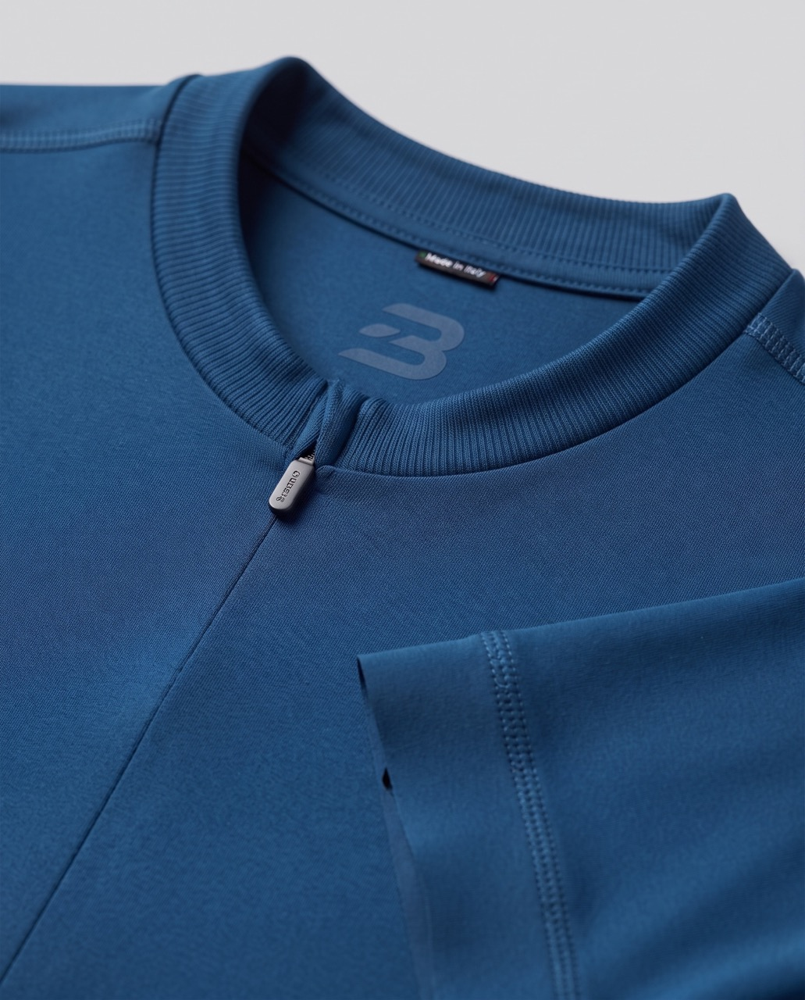

Flat, architectural, set entirely in Fraunces. A near-mono blue on a light ground, a visible modular grid, square surfaces with softly rounded controls, strong 2px rules. Nothing floats; nothing is decorated.
This page covers the foundations — colour, type, spacing, icons. The individual controls (buttons, tags, fields, cards, the stepper) live in their own reference.
Components — buttons, tags, badges, alerts, fields, choice controls, cards, the product card, tables, dialogs, the stepper and the locale picker. Each one shows its supported variants only. See Components.dc.html.
Blocks — page-level assemblies built from those components: navigation, footer, hero, product listing, product grid, brand crossover and more, shared by both Bridge and SHIFT through a brand prop. Every page mounts these rather than copying their markup. See Blocks.dc.html.
A mono scheme: one accent voice. Light steps (100–300) for tinted fills and hovers, 500 as base, 700–900 for text on tints and pressed states.
Warm on purpose, so it sits outside the blue accent: a bag count or an alert can never be mistaken for the primary action. Use 500 as the badge fill with --color-signal-ink on top, 700 for signal-coloured text, 100 for a tinted row.
Fraunces over Fraunces. A fixed scale — density moves spacing, not sizes. Everything flush left.
Body copy runs at fifteen pixels on a 1.55 line height. Alignment and the strength of the dividers do all the organising, so paragraphs need no ornament — a link takes the accent, and muted text drops to 55% ink.
A 1.00× scale, square surfaces with softened controls, three shadow steps tuned to the light ground.
Lucide, inline SVG on currentColor. 20px at interface sizes, 16px inside buttons.
Flags are the one exception — system emoji glyphs, never redrawn. They label a country in the locale picker and sit beside the code in the nav and footer; they never appear alone.
Photographs run in full colour, cropped hard to the grid. No tinting, no duotone.

The primary is a solid accent fill. Labels are flush left — a button wider than its label starts at the left padding edge.
Native elements, themed states, no script. Fields sit on the surface tone inside a 1px divider border.
Surface-filled, square-cornered, with a kicker, title, body and meta row. Elevation is a utility, not a default.
Equal-width cells and strong horizontal rules; structure does the organising.
Headings, copy and button labels share one left edge down the page.
Photographs run in full colour, cropped square to the grid.
One header bar and no bottom rule — the page below supplies its own edge where one is wanted. Sign-in and bag are icons, matched to search; the bag count rides on the icon as a badge. The current item takes the accent.
Clockwork schedules, printed weekly.
Wayfinding on a strict modular grid.
One typeface, one accent, no ornament.
A 2px header rule, 1px row rules, a 4% ink hover. Status cells reuse the tags.
| Line | Departure | Platform | Status |
|---|---|---|---|
| IC 812 — Basel | 07:04 | 3 | On time |
| RE 226 — Bern | 07:19 | 7 | Delayed 4′ |
| IR 75 — Luzern | 07:33 | 1 | On time |
| S 12 — Winterthur | 07:41 | 12 | Boarding |
A surface at the top elevation over a 50% neutral-900 backdrop, shown here in a static frame.
Both sit on the signal role, not the accent — a bag count must never read as the primary action. The badge is the only fully round shape in the system.
Alerts carry a 2px rule on the leading edge over a 6% tint. Error and warning take signal, success takes accent, info takes neutral.
Series 01 Pro Jersey, size M.
Check the number and expiry, or try another card.
One progress stepper for every multi-step flow — checkout, the journal submission and the ride log all use this component rather than their own.
The quantity picker is its own component: 40px targets, a tabular value, and a disabled decrease at the minimum rather than a hidden one.